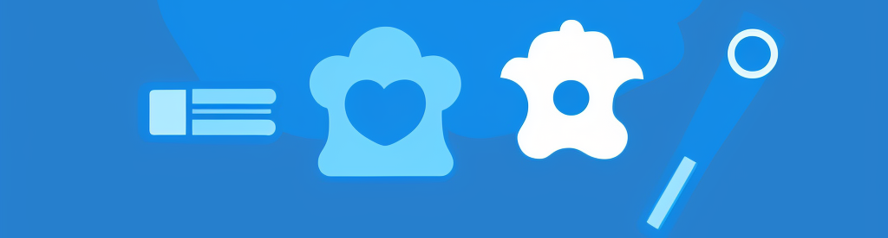
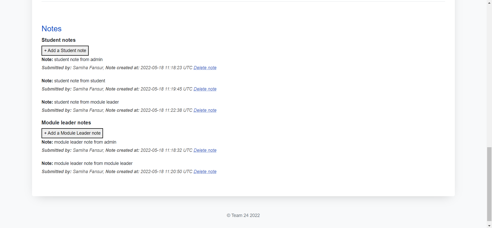

Extenuating Circumstances Form System
This project can be scaled for the workpalce acting as an intermediate for a flexisystem allowing employees to take time off due to medical reasons.
- GitHub Link
- |
- Bootstrap
- Ruby on Rails
- Postgresql
- Capybara
Bootstrap and Ruby on Rails website using Postgresql database to securely exchange sensitive information between students and univiersities.
The project emphasises secure transfer of data, only allowing authorised personnel to view specific information. Using Bootstrap to create the simple and accesible design, Postresql for the Database and information management and Capybara for thorough testing of the software via Unit Testing and User-Acceptance/End-End Testing.

